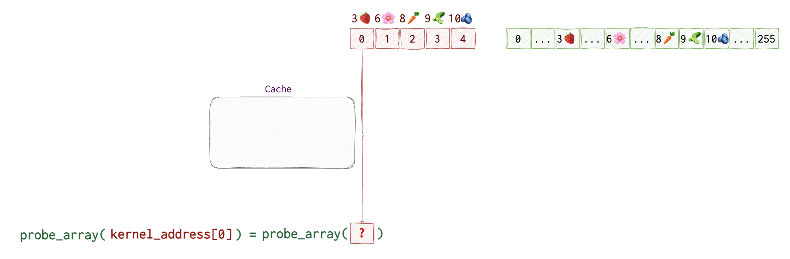
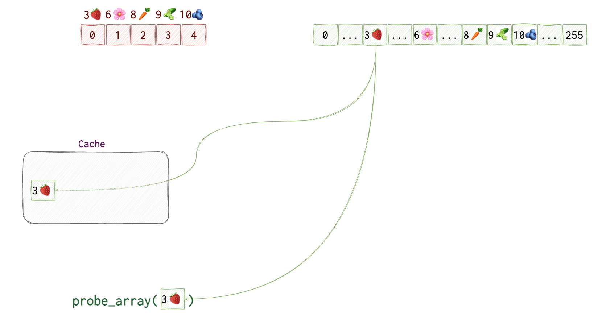
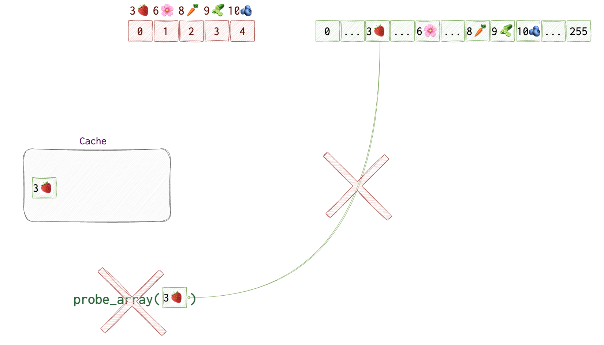
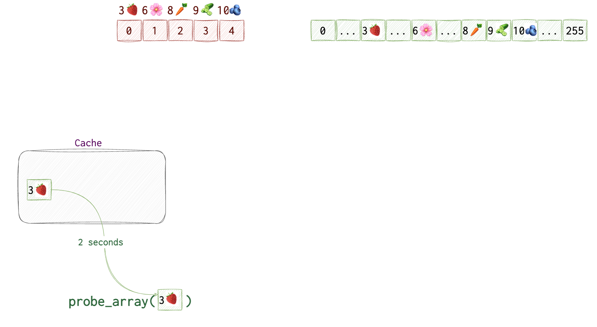

Several years ago, the internet was flooded with news about two famous vulnerabilities: Meltdown and Spectre. It took me some time to understand how both of them work, but here are the results of my attempt. To understand the mechanics of these two vulnerabilities, one needs to understand the basics that I’ve tried to explain in the article here.
Speculative Execution
The core problen with these two fellas, is the speculative (ahead and out of order) execution.
Imagine a couple: a man 🕺🏼 and a woman 💃🏻. The woman has a little problem with alcohol 🍷 . So, they have come up with a solution not to let her go down the mine but also not to make her life too boring as well. She can have a fair share of her favourite wine only if they are having a steak 🥩 for dinner. Neat 🙂 Now, they have run out of meat and the husband 🕺🏼 went to the shop. The woman 💃🏻 doesn’t know if he buys a steak or not, but just to safe the time for opening the wine and letting it decante for a while, she opens the bottle anyway hoping he will not return empy-handed. If her husband succeeds with the quest of the steak-hunt, she can safely drink the wine and enjoy the evening. Otherwise, she will get rid of the wine 🍷 . I know, what a waste!
This is a rough idea of speculative execution.
Consider the following code:
if (🪰 < 🐘){
🕺🏼
}
If 🐘’s size is not in the cache and needs to be calculated, the CPU speculates that the condition is met and executed the body of the if statement. The moment we know the 🐘’s size, and if it’s smaller the the 🪰, the result of the operation withing the body of the if statement is discarded.
But 💃🏻 didn’t drink the wine since there was no steak, no hard done, right? Well, one could smell the wine 🍷 when coming to the kitchen, and deducing that she was going to have a steak 🥩. This is a very rough analogy for a side-channel attack. You can’t see the wine, but the smell of the steak can give you a hint.
Now, let’s take another analogy that’s closer aligned with the code below. Let’s say, that we have safe deposit boxes in a private vault. This vault is protected by guards, systems, alarms etc. A 👱🏻♀️ woman called Janice is the only person who has access to the keys. She keeps them all in her drawer, but those that were used recently, she keeps on the table. It’s a usual thing for her to be required to open the same deposit box shortly after it was open: people ofter forget stuff. People come, provide their identifications and if all is alright, she opens the box for them. Most of the time, people coming in do have access to the vault, and thus usually pass the check. So, while the security guard checks the person for guns and drugs and checks their identification cards 🪪, Janice finds the key that’s needed and goes to safe deposit box. She opens it. If the person doesn’t pass the check for some reason, he is not let in. Janice closes the box and returns back to her desk. The person coming can see if Janice is at her desk and how quickly she stands up with a key to the box. So, he can deduce wether she’s using the key from the table or from the drawer based on how quickly she finds it. So, imagine a thief needs to know if some known businessmen owning a safe deposit box has accessed it recently. By impersonating this businessmen and observing how quickly Janice finds the key, he can know if the businessman in question has recently opened his vault.
Diving Deeper
Now, let’s see what the actual technicalities are.
There are 256 possible values for a byte: from 0x00 to 0xFF (or from 0 to 255 in decimal, or 0000 0000 to 1111 1111 in binary).
We create an array with all the 255 possible values for 1 byte. In the picture below, the numbers in squares represent indices of the arrays kernel and probe_array. Numbers and emojis above - actual data in the array. probe_array contains no data or garbage - we don’t really care about it. We only care about its indices. However, for the kernel array we do care about the actual values.

Then, we try accessing data in the probe_array at the index that’s equal to the data retrieved from the kernel memory (which can only be a value from 0 to 255). We don’t see which value that is, but the CPU knows the value at kernel[0] which is 3🍓 and uses it to get the value at probe_array[🍓]. It also saves the address of probe_array[3🍓] to its cache for quicker retrieval the next time it’s needed.

However, our process doesn’t have access to this area of memory, so, the CPU discards the result. But! It doesn’t clear the cache, so that probe_array[3🍓] is still there.

While the probe_array[3🍓] is still in the cache, we will try accessing each of the 256 items in the probe_array to see which value is retrieved quicker than others.

We start at probe_array[0]. Say, it takes CPU 10 seconds 🕙 to get back to us (yeah, our CPU is super slow, just for the simplicity’s sake). We repeat this step for probe_array[1] and probe_array[2]. We get the result in 10 seconds 🕙 again.

Once we get to probe_array[3🍓] we get the result in 2 seconds 🕑 as opposed to 10 seconds 🕙. So, we can assume that this value was in the cache, thus, the byte at kernel[0] equals to 3🍓.
❗️One thing the attacker needs to make sure of, is the the cache is cleared after each probe of the kernel byte (at step 1 in the pictures).
Let’s now see the code. I have marked some places with the same emojis as in the pictures above.
❗️Multiplication by
4096is needed because memory is allocated in pages that are of4096bytes in size. We can ignore it in the illustration for simplicity’s sake.
uint8_t* kernel_data = (uint8_t*)kernel_address; // Kernel address to read from, aka, our kernel array
uint8_t* probe_array = new uint8_t[256*4096]; // The probe array
// Out-of-order execution and caching
uint8_t 🍓 = kernel_data[0]; // the value at index 0 is 3🍓. We fetch byte from kernel memory, triggers exception but gets speculatively executed
uint8_t dummy = probe_array[🍓*4096]; // Access the corresponding index in the probe array
// Measure access times for each index in the probe array, the fastest one reveals the secret byte
for (int i = 0; i < 256; i++) {
if (measure_access_time(&probe_array[i*4096]) < THRESHOLD) {
// When we reach probe_array[🍓], we get our guy
}
}
Meltdown
Spectre
// Spectre pseudocode
uint8_t* probe_array = new uint8_t[256*4096]; // Probe array
uint8_t array[10] = {1, 2, 3, 4, 5, 6, 7, 8, 9, 10}; // Some array in our program
uint8_t* array_bound = &array[10]; // Pointer to just past the end of the array
for (int j = 0; j < 300; j++) { // Train the CPU branch predictor
_mm_clflush(&array_bound); // Flush array_bound from cache
for (volatile int z = 0; z < 100; z++) {} // Delay (optional)
uint8_t* p = (j % 6) ? array : kernel_address; // Triggers branch misprediction after sufficient training
if (p < array_bound) {
uint8_t value = p[0]; // Speculatively fetch byte
uint8_t dummy = probe_array[value*4096]; // Speculatively access probe array
}
}
// Measure access times for each index in the probe array, the fastest one reveals the secret byte
for (int i = 0; i < 256; i++) {
if (measure_access_time(&probe_array[i*4096]) < THRESHOLD) {
// 'i' is potentially the value from kernel memory
}
}
References
Expand…
This, this and this article can help gain some initial understanding of memory addressing and layout.
https://github.com/IAIK/meltdown https://hackernoon.com/a-simplified-explanation-of-the-meltdown-cpu-vulnerability-ad316cd0f0de
https://seedsecuritylabs.org/Labs_16.04/PDF/Meltdown_Attack.pdf
https://seedsecuritylabs.org/Labs_16.04/PDF/Spectre_Attack.pdf